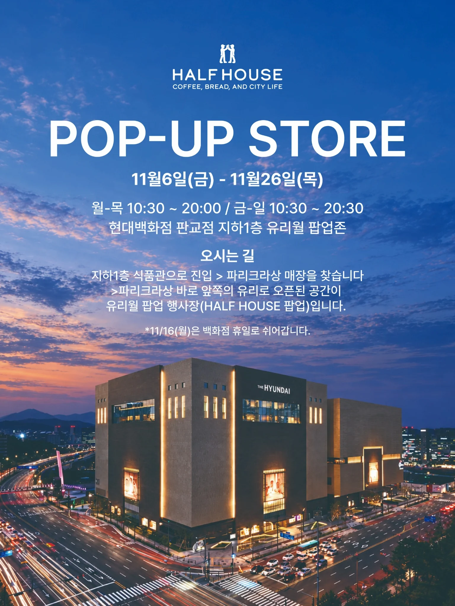

← 하프하우스 소식반가워요,
HALF HOUSE POP-UP STORE
반가워요,
판교.
하프하우스의 빵을
조금 더 가까이에서 만나보세요.
WHEN2026.11.06 — 11.26
WHERE현대백화점 판교점 B1
유리월 팝업존
유리월 팝업존
11월 16일(월)은 백화점 휴일로 쉬어갑니다.
팝업 메뉴 보기 ↓
COME SAY HELLO
여기서 만나요.
경기도 성남시 분당구 판교역로146번길 20
현대백화점 판교점 지하 1층
- 월요일 — 목요일
- 10:30 — 20:00
- 금요일 — 일요일
- 10:30 — 20:30
- 쉬어가는 날
- 11월 16일(월)
지하 1층 식품관에서 파리크라상을 찾아주세요.
바로 앞, 유리로 열린 공간이 하프하우스 유리월 팝업존입니다.
COFFEE, BREAD, AND CITY LIFE.
강남 하프하우스도 둘러보기 ↗